File: 000930.gt.txt (if the image is defective, simply delete all Arabic text and the line will be excluded)
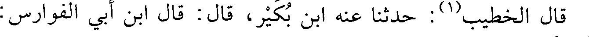
قال الخطيب (1): حدثنا عنه ابن بكير، قال: قال ابن أبي الفوارس:
File: 000931.gt.txt (if the image is defective, simply delete all Arabic text and the line will be excluded)
فيه تساهل.
File: 000932.gt.txt (if the image is defective, simply delete all Arabic text and the line will be excluded)
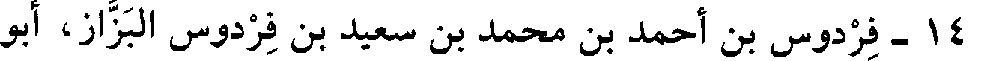
14 - فردوس بن أحمد بن محمد بن سعيد بن فردوس البزاز، أبو
File: 000933.gt.txt (if the image is defective, simply delete all Arabic text and the line will be excluded)
15 - محمد بن أحمد بن علي بن شاهويه، القاضي أبو بكر
File: 000934.gt.txt (if the image is defective, simply delete all Arabic text and the line will be excluded)
بكر.
File: 000935.gt.txt (if the image is defective, simply delete all Arabic text and the line will be excluded)
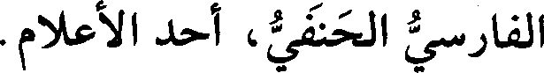
الفارسي الحنفي، أحد الأعلام.
File: 000936.gt.txt (if the image is defective, simply delete all Arabic text and the line will be excluded)
سمع أبا خليفة، وزكريا الساجي، ودرس بنيسابور، ثم درس ببخاري
File: 000937.gt.txt (if the image is defective, simply delete all Arabic text and the line will be excluded)
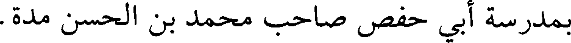
بمدرسة أبي حفص صاحب محمد بن الحسن مدة.
File: 000938.gt.txt (if the image is defective, simply delete all Arabic text and the line will be excluded)
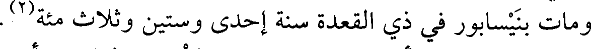
ومات بنيسابور في ذي القعدة سنة إحدى وستين وثلاث مئة(2) .
File: 000939.gt.txt (if the image is defective, simply delete all Arabic text and the line will be excluded)
16 - محمد بن أحمد بن موسى بن يزداد، القاضي أبو عبدالله
File: 000940.gt.txt (if the image is defective, simply delete all Arabic text and the line will be excluded)
القمي.
File: 000941.gt.txt (if the image is defective, simply delete all Arabic text and the line will be excluded)
توفي بفرغانة في صفر، وحمل تابوته إلى سمرقند. سمع محمد بن
File: 000942.gt.txt (if the image is defective, simply delete all Arabic text and the line will be excluded)
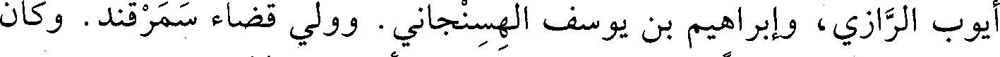
أيوب الرازي، وإبراهيم بن يوسف الهسنجاني. وولي قضاء سمرقند. وكان
File: 000943.gt.txt (if the image is defective, simply delete all Arabic text and the line will be excluded)
من كبار الحنفية، ثقة في الحديث. روى عنه أبو سعد الإدريسي وغيره.
File: 000944.gt.txt (if the image is defective, simply delete all Arabic text and the line will be excluded)
17 - محمد بن حارث بن أسد، أبو عبدالله الخشني القيرواني
File: 000945.gt.txt (if the image is defective, simply delete all Arabic text and the line will be excluded)
الحافظ.
File: 000946.gt.txt (if the image is defective, simply delete all Arabic text and the line will be excluded)
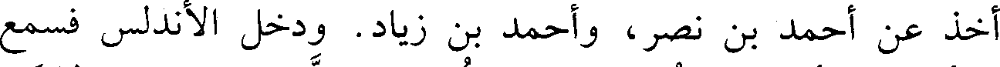
أخذ عن أحمد بن نصر، وأحمد بن زياد. ودخل الأندلس فسمع
File: 000947.gt.txt (if the image is defective, simply delete all Arabic text and the line will be excluded)
قاسم بن أصبغ، وأحمد بن عبادة، وسكن قرطبة وتمكن من صاحبها الحكم
File: 000948.gt.txt (if the image is defective, simply delete all Arabic text and the line will be excluded)
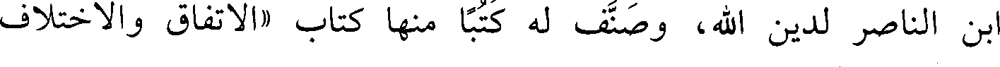
ابن الناصر لدين الله، وصنف له كتبا منها كتاب «الاتفاق والاختلاف
File: 000949.gt.txt (if the image is defective, simply delete all Arabic text and the line will be excluded)
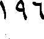
196
File: 000950.gt.txt (if the image is defective, simply delete all Arabic text and the line will be excluded)
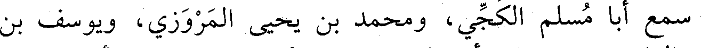
سمع أبا مسلم الكجي، ومحمد بن يحيى المروزي، ويوسف بن
File: 000951.gt.txt (if the image is defective, simply delete all Arabic text and the line will be excluded)
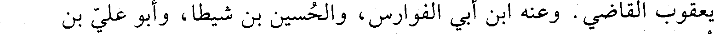
يعقوب القاضي. وعنه ابن أبي الفوارس، والحسين بن شيطا، وأبو علي بن
File: 000952.gt.txt (if the image is defective, simply delete all Arabic text and the line will be excluded)
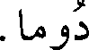
دوما.
File: 000953.gt.txt (if the image is defective, simply delete all Arabic text and the line will be excluded)
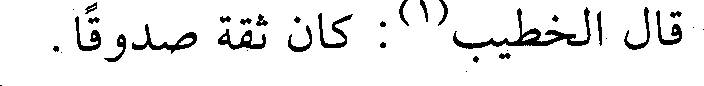
قال الخطيب(1): كان ثقة صدوقا.
File: 000954.gt.txt (if the image is defective, simply delete all Arabic text and the line will be excluded)
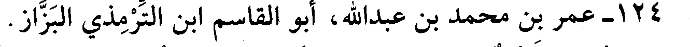
124 - عمر بن محمد بن عبدالله، أبو القاسم ابن الترمذي البزاز.
File: 000955.gt.txt (if the image is defective, simply delete all Arabic text and the line will be excluded)
بغدادي فيه ضعف، روى عن جده لأمه محمد بن عبيدالله بن مرزوق
File: 000956.gt.txt (if the image is defective, simply delete all Arabic text and the line will be excluded)
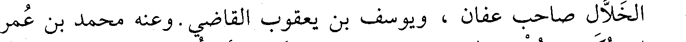
الخلال صاحب عفان ، ويوسف بن يعقوب القاضي. وعنه محمد بن عمر
File: 000957.gt.txt (if the image is defective, simply delete all Arabic text and the line will be excluded)
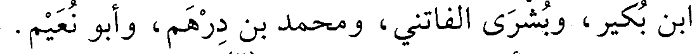
بن بكير، وبشرى الفاتني، ومحمد بن درهم، وأبو نعيم.
File: 000958.gt.txt (if the image is defective, simply delete all Arabic text and the line will be excluded)
قال ابن أبي الفوارس : فيه نظر(2).
File: 000959.gt.txt (if the image is defective, simply delete all Arabic text and the line will be excluded)
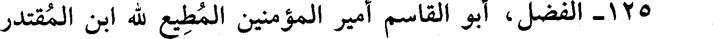
125 - الفضل، أبو القاسم أمير المؤمنين المطيع لله ابن المقتدر
To Save: `Ctrl+s`, make sure to choose `Webpage, complete`!